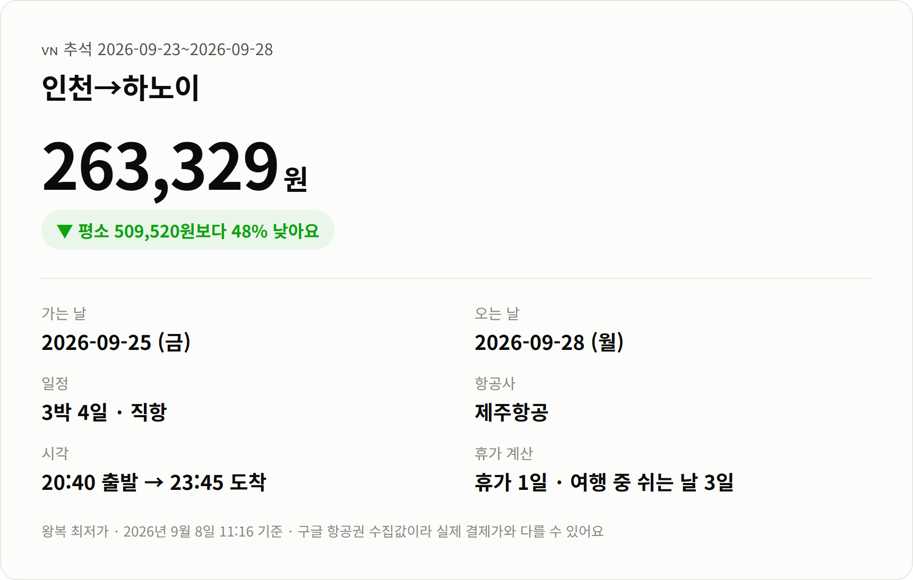
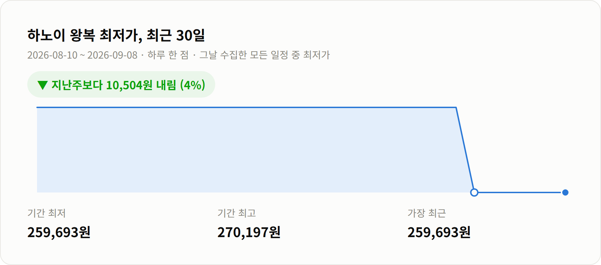

안녕하세요 :)
추석까지 보름 조금 넘게 남았어요.
아직 아무것도 못 정하신 분들 계실 것 같은데요.
이맘때면 보통 가격이 올라서 포기하게 되는데,
하노이는 아직 자리가 남아 있더라고요.
제주항공 직항 왕복 263,329원이에요.
이 연휴 통상 시세가 509,520원이니까
절반 가까이 빠진 값이에요.
연휴가 아닐 때 기준가가 349,582원인 걸 보면,
추석인데 평시보다도 싸게 나온 셈이에요.

가는 편: 9/25(금) 20:40 → 23:45 도착
오는 편: 9/28(월)
운항: 제주항공 직항
일정: 3박 4일
퇴근하고 공항으로 가도 되는 시간대예요.
대신 도착이 밤 11시 45분이라
첫날 저녁은 없다고 보시는 게 맞아요.
숙소는 공항에서 가까운 쪽으로 잡으시면 편해요.
[사진 자리] 하노이 구시가지 골목 풍경
3박 4일인데 쓰는 연차는 하루예요.
9/25 금요일이 공휴일이고 주말이 그대로 붙어서,
돌아오는 9/28 월요일만 내면 되거든요.
| 항공사 | 운항 | 시각 | 왕복 |
|---|---|---|---|
| 제주항공 | 직항 | 20:40 → 23:45 | 263,329원 |
| 경유편 | 경유 1회 | 22:30 → 08:50 | 497,900원 |
같은 날짜인데 경유편이 23만원 넘게 비싸요.
밤 10시 반에 떠서 다음날 아침 8시 50분 도착이라
시간으로도 손해가 커요.
다만 제주항공은 저비용항공사예요.
수하물이랑 기내식은 따로 붙는 조건이니
결제 전에 총액을 한 번 보고 넣으시는 게 좋아요.

최근 일주일 사이 4% 내렸어요.
그 전 주 최저가가 270,197원이었거든요.
한 달 최저가가 259,693원이니까
지금 값은 거기서 3,636원 위예요.
크게 기다릴 자리는 아닌 것 같아요.
하노이는 쉬러 가는 곳이라기보단
걸어 다니는 도시예요.
구시가지 36거리는 골목마다 팔던 물건이 달라서
지금도 거리 이름에 그 흔적이 남아 있어요.
지도 없이 헤매도 한 시간이면 다시 호수로 나오게 돼요.
아침에는 호안끼엠 호수 쪽이 좋아요.
해 뜨자마자 어르신들이 나와서 운동을 하시는데,
그 시간대 공기가 하루 중 제일 견딜 만해요.
[사진 자리] 하노이 분짜 한 상
먹는 건 분짜랑 에그커피예요.
에그커피는 달걀노른자를 크림처럼 올려주는 건데
처음엔 이상해 보여도 한 잔 마시면 이해가 가더라고요.
9월 하노이는 낮 최고가 31도쯤이고
습도가 81%까지 올라가요.
그리고 이 시기는 우기예요.
오후에 한 번씩 쏟아지는 날이 있어서
실내 일정을 한두 개 섞어두시는 게 좋아요.
우산보다는 얇은 우비가 편하더라고요.
날씨를 감안해도 갈 만한가 하면,
이 가격이면 저는 그렇다고 봐요.
[사진 자리] 하노이 야경
가격은 2026년 9월 8일 11:16 기준이에요.
구글 항공권에서 모은 값이라 실시간이 아니고,
실제 결제하실 때는 달라질 수 있어요.
다른 노선이랑 연휴별 가격은 여기에 정리해두고 있어요.
읽어주셔서 감사합니다 :)